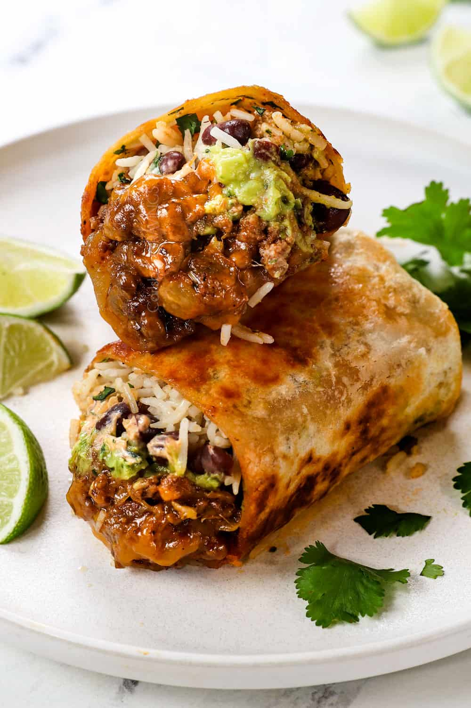

Beef Burrito

Description
Delicious, juicy and flavorful. Beef burritos for any time of day, perfect for an extra snack, lunch time fillings or an impromptu dinner.
Ingredients
- 1 pound lean ground beef
- 1 cup chopped onion
- 2 large garlic clvoes, minced
- 2 teaspoons chili powder
- 1 teaspoon ground cumin
- 1/2 cup taco sauce
- 16 ounce cat fat free refried black beans
- 6 10-inch flour tortillas
- 3/4 cup sour cream
- 1 1/2 cups finely shredded Mexican cheese blend
Steps
- Cook the ground beef in large nonstick skillet over medium-high heat 5 to 7 minutes or until thoroughly cooked, stirring frequeuntly;drain.
- Add the onion, garlic, chili powder, cumin and taco sauce to the meat and stir. Cook for 5 minutes or until thoroughly heated and the vegetables are tender, stirring frequently.
- Spread 1/3 cup of refried beans on the bottom 1/3 of each tortilla, leaving 1-inch around bottom and edges. Spoon 1/3 cup of the meat mixture over beans. Top the meat with 1 tablespoon of sour cream and 1/4 cup of cheese.
- Start rolling up from bottom, enfolding the filling. Fold in the sides and continue rolling up.
- Heat the oven to 375 degrees. Spray all sides of the burritos with cooking spray. Place burritos on a cookie sheet, seam sides down. Bake for 12 to 14 minutes or until thoroughly heated and browned, turning over once.
- Top with dollops of the remaining sour cream.
- Optional: for soft burritos, place each unbaked burrito on an individual microwavable plate. Microwave individually on High 1 minute or until thoroughly heated.